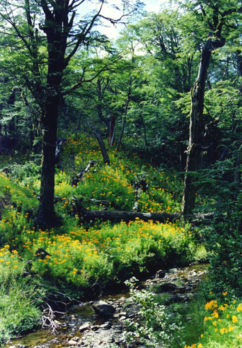
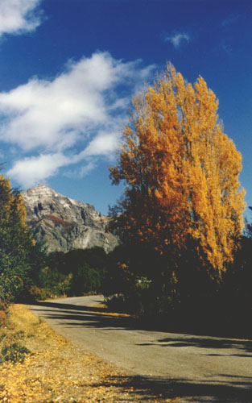

Next: Housing
Up: School Bariloche 2000 Quantum
Previous: Schedule
- The lectures will take place within the
Centro Atómico Bariloche.
The CAB is located 10 kilometers away from the center of the city of
Bariloche.
- San Carlos de Bariloche
is situated in
Argentina (see map), about
1600 km south-west from Buenos Aires, within one of the most important
national parks of Patagonia, the Nahuel Huapi National Park. Nahuel Huapi
is also the name of the lake along which the village was built.
- This part of Patagonia is a wild country of lakes, forests and mountains.
However there are desert lands very near, and the Pacific ocean (Chilean
side) is only 100 km away. There are available a number of recreational
activities typical of mountain resorts like hiking, biking, horse riding,
sailing on several of the area's lakes, etc.
The weather in this region during January is mostly sunny, usually very dry,
sometimes windy with occasional thunderstorms. Temperatures range from 8 C
to 30 C. The altitude of the town above sea level is about 800 m.


Next: Housing
Up: School Bariloche 2000 Quantum
Previous: Schedule
Ariel O. Garcia
1999-09-30
{kind=link}